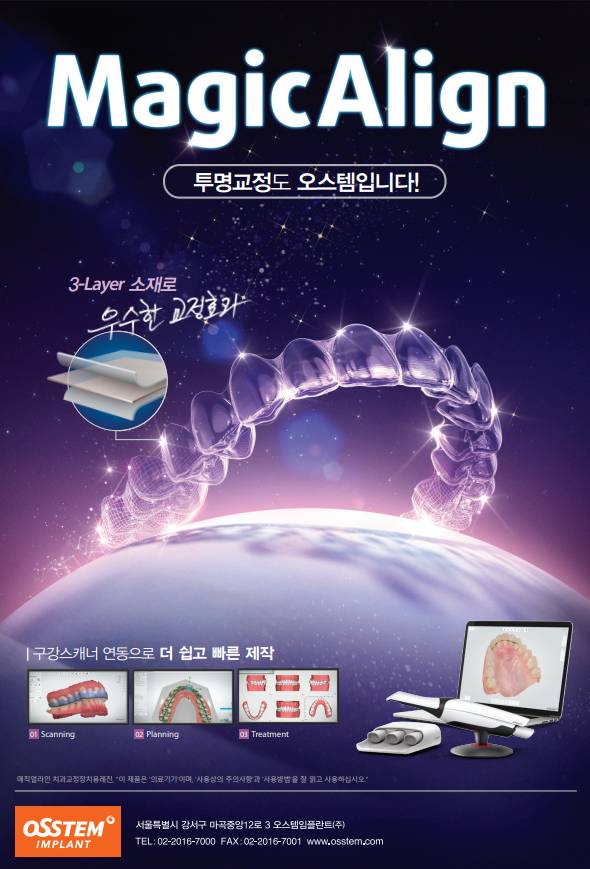
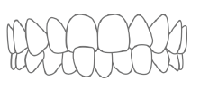
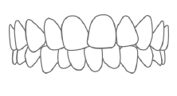
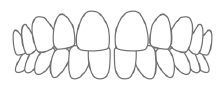
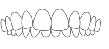
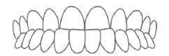
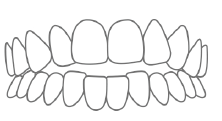

눈에 띄지 않게, 일상은 그대로
3-Layer 특수소재로 초기에 덜 아프고 끝까지 잘 되는 투명교정
투명교정은 금속 브라켓 없이 투명한 플라스틱 장치를 착용해 치아를 이동시키는 교정 방법입니다.
서울하루치과에서는 오스템 MagicAlign을 사용합니다. 3-Layer 특수소재로 제작되어 기존 1-Layer 장치보다 교정 유지력이 15% 이상 우수하며, 초기에 덜 아프고 끝까지 교정효과가 잘 유지됩니다.

For Your Smile, MagicAlign
투명한 소재의 교정장치로 잘 보이지 않아 심미적인 교정치료가 가능합니다.
착탈이 가능하여 자유로운 일상생활을 즐길 수 있으며, 모든 음식물을 섭취할 수 있습니다.
이물감이 적고 잇몸에 자극이 거의 없으며, 평소처럼 양치질 및 치실 사용이 가능합니다.

치아가 삐뚤삐뚤 해요

치아 사이가 벌어졌어요

윗니와 아랫니가 엇갈려있어요

윗니 때문에 입이 튀어나와요

아랫니가 윗니를 덮고 있어요

윗니와 아랫니가 잘 닿지 않아요
취업이나 결혼 등으로 심미적 교정이 필요하신 분
기존 교정치료 후에 재 치료를 해야 하는 분
미리보는 MagicAlign 치료과정
환자분의 치아상태를 CAD/CAM으로 진단·분석하여 체계적인 교정진료 계획을 수립합니다.
교정 전문 S/W로 시뮬레이션을 통해 환자 맞춤형 투명교정장치를 설계합니다.
3-Layer 특수소재로 환자 맞춤형 장치를 제작합니다. 변형이 적어 교정 유지력이 우수합니다.
2주에 한번씩 장치를 바꿔가며 편리하게 교정치료를 진행합니다.
충분한 착용 시간이 교정 효과를 좌우합니다.
식사와 양치 시에는 장치를 빼고, 양치 후 다시 착용합니다.
치아에 무리가 가는 딱딱한 음식은 피해주세요.
정기적인 체크를 통해 교정 진행 상황을 확인합니다.
비교적 경미한 경우에 적합합니다. 복잡한 케이스는 다른 교정 방법을 병행하기도 합니다. 정확한 시술 여부는 치과의사 진단에 따라 달라질 수 있습니다.
이물감이 적고 잇몸에 자극이 거의 없습니다. 처음 며칠은 적응 기간이 필요하지만 금방 익숙해집니다.
네, 식사와 음료(물 제외) 섭취 시에는 빼야 장치 변형과 착색을 막을 수 있습니다.
케이스에 따라 다르지만, 보통 6개월~2년 정도 소요됩니다. 2주에 한번씩 장치를 교체하며 진행합니다.
※ 투명교정 시술 여부는 치과의사 진단에 따라 달라질 수 있습니다. 반드시 치과 상담 후 투명교정 진료를 받으실 것을 권장합니다.